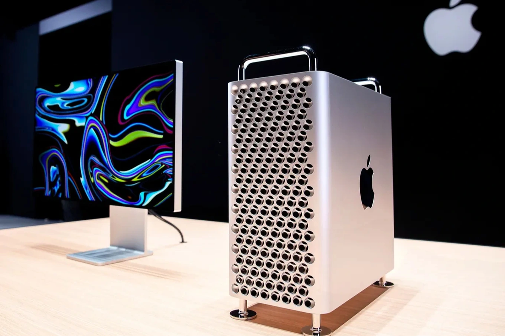

Apple vừa chính thức ngừng sản xuất dòng máy tính để bàn cao cấp Mac Pro.

Sau lần nâng cấp gần nhất vào năm 2023 với chip M2 Ultra, dòng Mac Pro gần như không có thêm thay đổi đáng kể. Trong khi đó, Mac Studio với thiết kế nhỏ gọn hơn nhưng được trang bị chip M3 Ultra lại có hiệu năng vượt trội, khiến Mac Pro dần mất lợi thế cạnh tranh.
Sự trùng lặp về công năng trong khi giá bán cao khiến Mac Pro ngày càng kén người dùng. Thời gian qua, Apple được cho là đã đẩy mạnh việc xả hàng tồn tại các hệ thống bán lẻ.
Theo Bloomberg, Apple đang tập trung phát triển thế hệ Mac Studio mới với bộ vi xử lý nâng cấp, dự kiến ra mắt vào cuối năm, qua đó củng cố vị thế của dòng sản phẩm này trong hệ sinh thái Mac.
Đầu tháng này, Apple cũng dừng sản xuất màn hình Pro Display XDR, sản phẩm ra mắt cùng Mac Pro năm 2019, để tập trung vào dòng Studio Display.
Dù vậy, quyết định này vẫn gây tranh luận trong cộng đồng người dùng chuyên nghiệp. Một số ý kiến cho rằng Mac Pro vẫn có lợi thế riêng nhờ khả năng mở rộng phần cứng thông qua các khe PCIe, điều mà Mac Studio chưa thể thay thế hoàn toàn.
Về chuỗi cung ứng, việc dừng Mac Pro cũng kéo theo thay đổi đáng chú ý. Đây từng là thiết bị duy nhất của Apple được lắp ráp tại Mỹ. Trong thời gian tới, vai trò này dự kiến sẽ được chuyển sang dòng Mac mini tại nhà máy ở Houston.
Bình luận
Máy ngon nhưng giá lúc ra mắt hơi chát
Con này dùng code FrontEnd vẫn ổn mà 😁, kể cả giờ ngồi chỉnh ảnh cũng còn ổn
Đang xài và cũng thấy quá đáng tiền